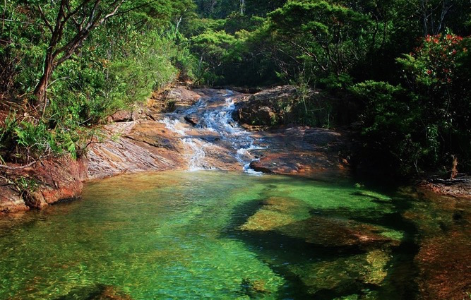
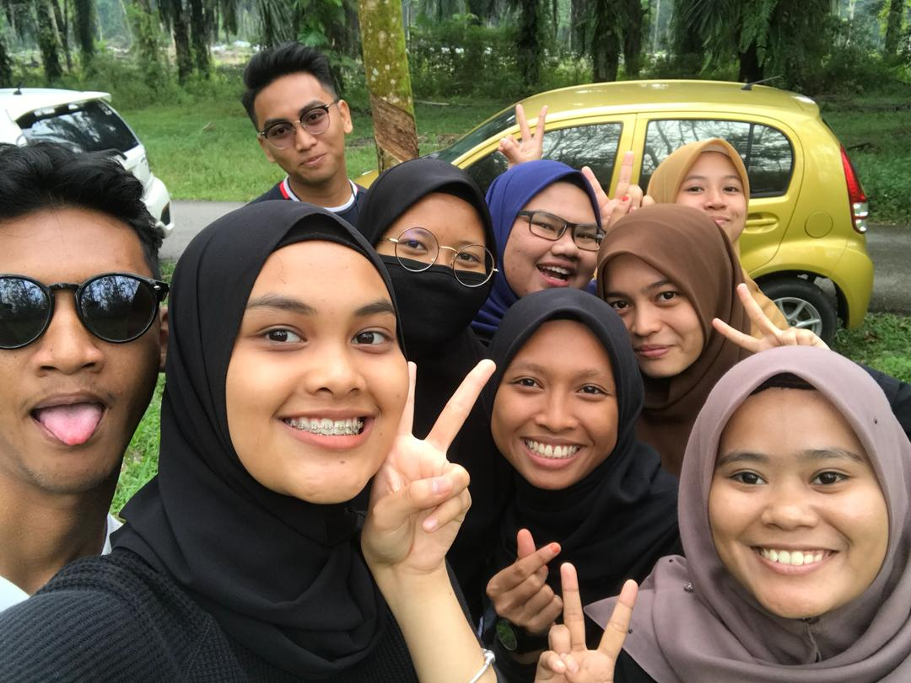
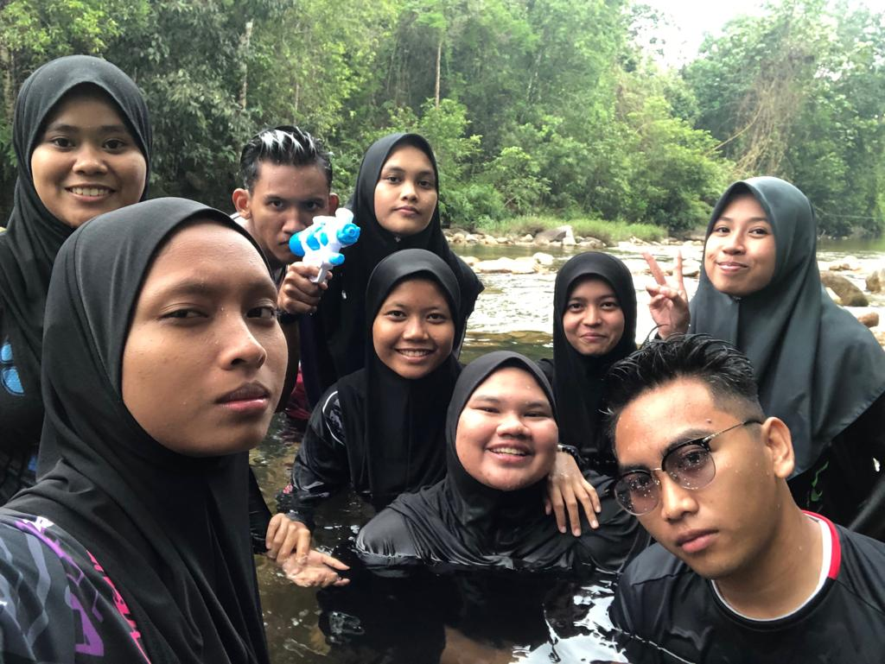
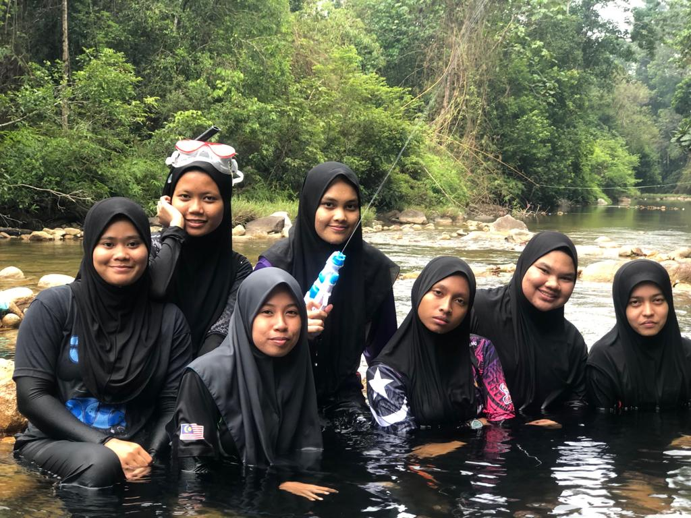
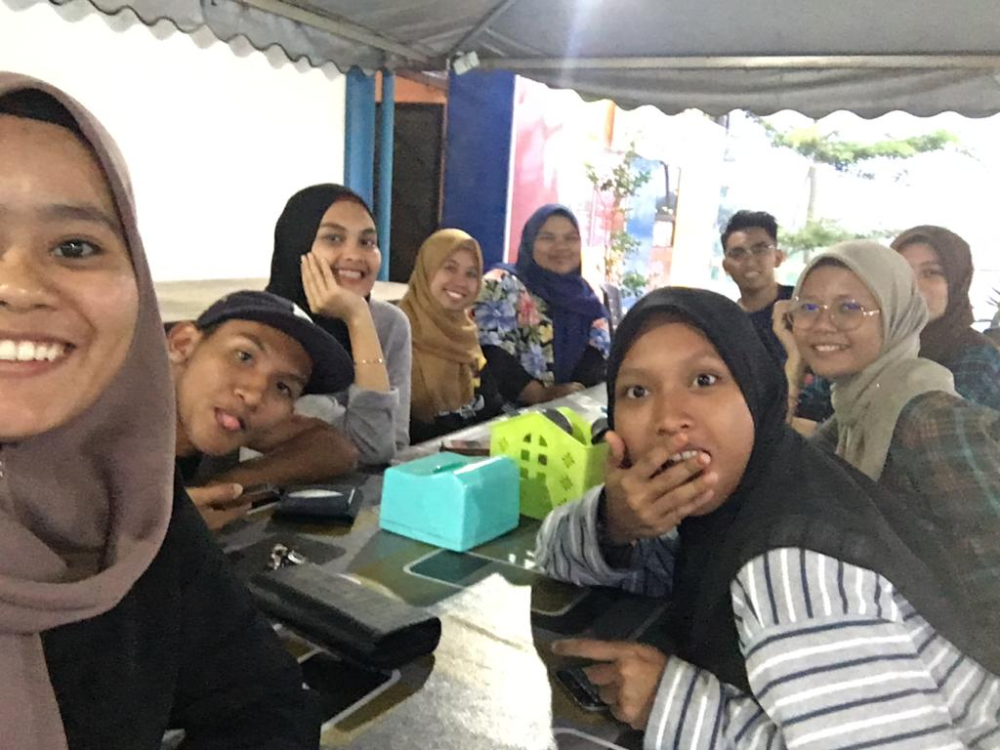

Hello and Assalamualaikum . For this web page, I will share the itinerary UiTM Dungun to Sungai Bangan,Dungun that took about an hour. to find out more. Please scroll down to find more :D
ITINERARY (16 SEP 2019)
| 10:00 | Depart from UiTM Dungun to Dungun Town. |
| 10:15 | Arrive at Sura Gate Dungun and went to wholesale store to buy equipment and supplies. |
| 11:00 | Depart from Dungun Town to Sungai Bangan. |
| 12:10 | Arrive at Sungai Bangan. |
| 12:15 | Find port to picnic and preparing food. |
| 12:30 | Went to river. |
| 04:30 | Cleaning the equipments and the places . |
| 05:00 | Freshen up and depart to Bukit Besi. |
| 05:30 | Arrive at Tasik Puteri, Bukit Besi. |
| 07:00 | Depart from Bukit Besi to UiTM Dungun. |
There's a few picture that we had taken from our 'flight' day ;)
 
 
That's all for the whole day with my lovely friends <3
Thank you
For any inquiries please contact below :)